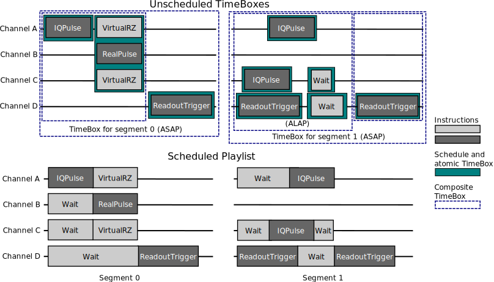

Concepts and Classes#
This section gives an overview of the main concepts and terminology in IQM Pulse.
Quick reference#
QPUs contain components: qubits, computational resonators, couplers, and probelines.
Each component may have some control channels connected to it. Control channels deliver physical control pulses to the QPU.
Quantum operations have a locus, which is the set of quantum information carrying components (qubits and resonators) the operation acts on. One operation may involve sending pulses to multiple control channels.
The assembly of a Playlist, or a batch of quantum circuits, can be summarized as follows:
A Playlist contains multiple independent segments, to be executed as a batch.
A segment is a conceptual unit at a time scale where the quantum information of the QPU can be assumed to be preserved. A quantum circuit corresponds to one segment.
What is executed during a segment is determined by a Schedule.
A Schedule is a set of hardware control channels, each with a strictly timed sequence of Instructions.
A Schedule is formed by scheduling a Timebox.
A TimeBox can contain other TimeBoxes without precise relative timing, or it can be atomic, in which case it contains a single Schedule.
The image below illustrates how a Playlist of two segments is formed from TimeBoxes.
Instructions#
Hardware instructions
are the lowest-level construct visible on the client side.
Instructions are a set of atomic, real-time execution commands for the control hardware supported by IQM.
They work in a time scale where the quantum information of the QPU can be assumed to be preserved.
Examples of Instructions are
IQPulse to play a microwave pulse on a channel,
VirtualRZ to adjust the modulation phase,
ReadoutTrigger to acquire measurement data,
and Wait to delay the next Instruction for a given time.
See iqm.pulse.playlist.instructions for the complete list.
During execution, each hardware control channel executes its own sequence of Instructions. Each Instruction blocks the next until it is completed. Instructions are as explicit as possible, so that there is no ambiguity on what will be executed when. IQM Station control transforms Instructions to machine-specific commands.
All Instructions have a duration, measured in samples, though the duration can be zero. The durations are subject to hardware-specific granularity constraints. For example, some hardware might require all instructions to be a multiple of 16 samples long, with a minimum of 32. Instructions violating the granularity constraints will raise an error. However, a typical user does not need to concern themselves about the constraints, as the gate implementations and IQM Pulse’s scheduling ensures the constraints are respected. The philosophy is that Station Control, which is inaccessible to the user, does not attempt to do any smart “magic” to fix inconsistencies in the user’s input, it simply executes the Playlist it is given. Instead, the magic happens on the client side so that it is transparent to the user.
Note
For technical reasons, IQM Pulse mostly uses classes from iqm.pulse.playlist.instructions, but when
finalizing the output, the instructions are converted to iqm.models.playlist.instructions.
These two class families are semantically equivalent, apart from a few exceptions like Block which
only exists on the client side to help with scheduling.
Schedules#
Schedule contains a number of control channels, each with a lists of Instructions.
All channels in a Schedule start executing at the same instant, and the timing is defined by the duration of the
individual Instructions.
Schedules can be thought of as a fixed block that occupies some interval on a timeline of some channels.
Schedules appear in two contexts: gate implementations and as complete segments. For example, when an implementation of a PRX gate is requested, a small Schedule involving the drive channel of a single qubit is created. When all the desired gates in a circuit have been scheduled by concatenating the gate-schedules together, the end result, a segment, is a large Schedule occupying all necessary channels. A typical segment starts with initializing the qubits and ends with reading out their state.
TimeBoxes#
Whereas a Schedule is a container with strict relative timing, a TimeBox is a container with undefined
relative timing.
Each TimeBox can be labeled using a human-readable label describing it, and operates on a number
of locus components, using some of their control channels.
A composite TimeBox contains other TimeBoxes as children, whereas atomic TimeBoxes contain a Schedule.
TimeBoxes are the main language in which users define the order and relative alignment of execution elements, be it gates, Schedules, or larger TimeBoxes.
A key process is the scheduling, in which TimeBoxes are resolved recursively into a fixed Schedule. When resolving, all Schedules inside the TimeBox are concatenated and are either left-aligned (ASAP) or right-aligned (ALAP), respecting the hardware constraints. Importantly, if some TimeBoxes have content on disjoint channels, the Schedules are allowed to happen simultaneously. If they have content on partly overlapping channels, the Schedules are concatenated while preserving their internal timing. Any interval that does not have explicit instructions is filled with Wait Instructions. The figure above demonstrates how TimeBoxes are resolved.
The syntax and rules are explained in more detail in Using ScheduleBuilder.
QuantumOps#
A higher-level concept, a QuantumOp can represent a unitary quantum gate,
or for example a measurement operation (not all QuantumOps necessarily represent a unitary gate).
QuantumOps are simple, abstract, self-contained actions one can execute on a station as parts of a quantum circuit.
They include quantum gates like PRX, CZ, and measurements and resets.
Whereas Schedules and Instructions act on control channels, QuantumOps act on named components on the QPU, such as
qubits or computational resonators.
A QuantumOp has unambiguous definition in terms of its intended effect on the computational subspace of the QPU component, but it can be implemented in various ways. Each implementation is represented as a GateImplementation.
The list of available QuantumOps at runtime can be obtained with iqm.pulse.builder.build_quantum_ops().
A new QuantumOp can be registered at runtime, together with an implementation, with
iqm.pulse.gates.register_implementation().
GateImplementations#
A GateImplementation bridges the gap between QuantumOps and TimeBoxes.
When a user requests a QuantumOp from ScheduleBuilder with specific parameters and locus components, the
chosen GateImplementation (usually the default) for the operation is used to produce a TimeBox.
This TimeBox, usually atomic, contains a Schedule on the appropriate control channels.
The Instructions within are constructed following the calibration values from the ScheduleBuilder.
All gate implementations are listed in iqm.pulse.gates.
Section Custom gate implementations explains how to add more implementations.
Playlists#
Once all TimeBoxes are scheduled into large Schedules, one for each segment/circuit,
the Schedules are collected into a Playlist.
The Playlist is the final product that is sent to Station Control.
Its contents are compressed by indexing all unique Instructions and waveforms on each channel,
and representing the control channels in each segment as lists of Instruction indices.
During execution, the segments in the Playlist are executed in order, and the whole sequence is repeated a number of times equal to the number of repetitions (shots).
Segments are separated in time by end delay, a parameter outside the Playlist. A long end delay can be used to prevent quantum information carrying from one segment to the next, thus resetting the qubits. Alternatively, the reset can be encoded in each segment as a long Wait instruction or using some active reset scheme.
Station Control aims to execute all segments together, but sometimes this is not possible due to various memory constraints. In case the whole Playlist does not fit in memory, the segments are split into chunks which are executed separately. The delay between chunks is undefined. Therefore, the time between segments is guaranteed to be at least the duration of the end delay, but can be much larger.
inspect_playlist() provides a neat visual representation of the playlist, as blocks of instructions on a
timeline.